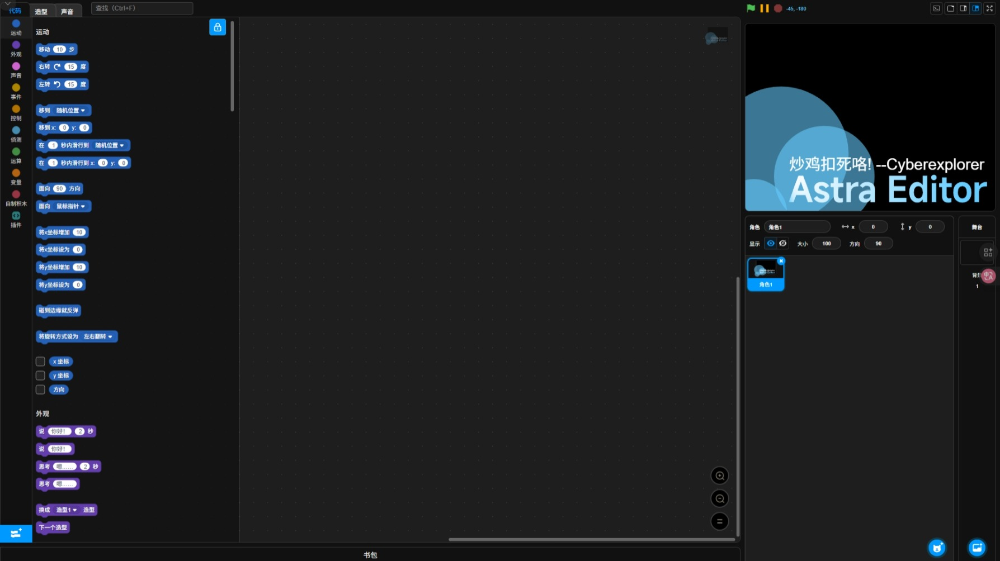
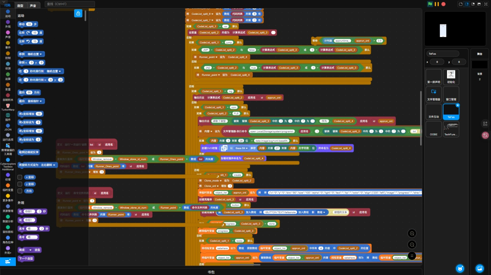

一把称职的锤子，而不是一朵鲜艳的玫瑰。

我们认为第二好的TurboWarp二创编辑器。
*这句话旨在致敬Smartisan，无任何实际意义。
AstraEditor 为TurboWarp增加了更多不曾有的新功能
AstraEditor 为TurboWarp增加了更多不曾有的新功能
README
你可以在一个新注释内以“#README”开头，并也可通过以空格为分割追加“#[标题]”
来控制README窗口显示的标题。添加成功后，上方会自动出现一个“README”按钮。
你还可以将角色名改为“README”，AstraEditor可在加载项目后自动跳出这个角色的README
扩展管理器
它可以显示现在已加载的所有扩展，并可以进行“预览” “删除” “导出”操作。
预览——你将可以查看这个扩展包含的积木，这在“加载自定义扩展”内同样拥有。
删除——你可以删除这个扩展，若作品使用了这个扩展，它会警告您是否删除，若同意，它会删除掉所有使用扩展的积木并删除扩展。
导出——你可以导出这个扩展，以便在别的项目使用。
Flyout
如果扩展的积木过长，让你感到困惑，你可以拖动flyout的边缘修改它的宽度
主题色
是否厌烦了那几个预设的颜色，想使用自己喜欢的颜色？ 此功能可以满足你的需求！
更多插件
我们制作了更多插件，来优化您的使用体验。

更新进行时
AstraEditor在持续更新，未来将会加入更多功能。
我们暂不透露未来的更新计划。以下是我们为TurboWarp增加的新功能：
我们暂不透露未来的更新计划。以下是我们为TurboWarp增加的新功能：
插件：
[/] 调试器（含新标签页）
|- 改为可拉伸
|- 增加“变量”标签页
|- 适配主题色
[+] MD注释编辑器
[+] SPA简易作品分析器
[+] 隐藏工具栏
[+] 显示FPS
[+] 拖动调整工具箱分类(来自PMOD)
[+] 固定积木(来自PMOD)
功能：
[+] 自定义主题色
[+] README注释显示
[+] 扩展编辑器
|- 积木预览
|- 实时加载
[+] 扩展管理器
|- 删除扩展
| |- 删除作品里的扩展积木
|- 预览扩展
|- 导出扩展
[+] 跳过自定义扩展警告
[+] 工具
|- 导出项目图片
|- 转换格式为PNG
[+] VSCODE 布局
[+] 打开非Scratch官网项目URL
[/] 造型编辑
|- 扩展边界
|- 布尔运算
| |- 结合
| |- 相交
| |- 剪除
| |- 拆分
|- 圆角矩形
| |- 修改半径
|-拖拽体验
[+] 隐藏的积木
|- ForEach
|- 计数器
|- 当该角色遇到xxx
[+] 错误积木
[/] 让更多积木值可显示在舞台上
|- 碰到xxx
|- 碰到颜色xxx
|- 颜色xxx碰到颜色xxx
|- 到xxx的距离
|- 按下xx键
[/] 让显示在舞台上的积木值的背景颜色跟随亮暗模式改变
[/] 跟进TW增加“在线”积木
[/] 为“在作品中保留设置”的文本加入翻译
[/] 可拉伸的 Flyout
修复：
自定义扩展的TextArea编码问题